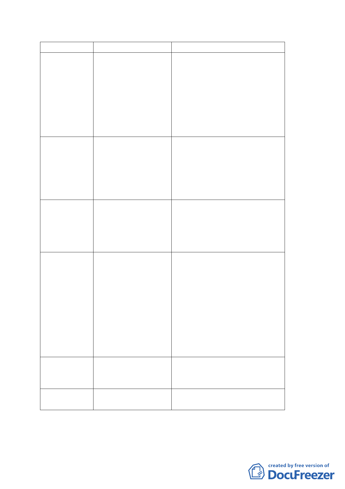

免予回饋原則
案例
說明
原則一
回復為原使用 北投通檢—人民陳情 原都市計畫係劃定直徑 12 公尺
分區
案件—羅吉愃陳情迴 之迴車道，後於通盤檢討時檢討
車道縮小案
變更為直徑 15 公尺迴車道，經
北投區都市計畫通盤檢討，擬回
復為原直徑 12 公尺之迴車道，
迴車道縮小部分回復為原住宅
區。
原則二
調整或合併街 臺北醫學院內 8 公尺 廢除原位於臺北醫學院內之 8 公
廓而調整道路 計畫道路調整
尺計畫道路（並將該道路用地變
用地
更為住 3），並將南側 6 公尺計畫
道路配合調整為 8 公尺，取代廢
除之計畫道路功能。
原則三
道路用地上已 士林區芝山段 2 小段 北側部分道路因應地籍線變更
有合法建築 761 地號附近（黃秀莊 後，另增東西向計畫道路一處，
案）南段道路調整 原計畫道路南段檢討變更為住
宅區部分。
原則四
配合地籍線修 1.士林區芝山段 2 小 1.原有計畫道路因應已指定建
正 段 761 地號附近（黃 築線之地籍線修正，部分住宅區
秀莊案）案北段道路 變更為道路用地；部分道路用地
調整
變更為住宅區。
2.萬華通檢-民和街 2.原有計畫道路因應已指定建
81 巷道路調整
築線之地籍線修正，部分住宅區
變更為道路用地；部分道路用地
變更為商業區，惟本案係經換地
協調，亦無涉及回饋。
原則五
山坡地道路廢 士林 81 號道路
除 （研擬中）
原則六
個案審定
結論：同意照辦。
肆、散會：（十七時四十五分）
三四